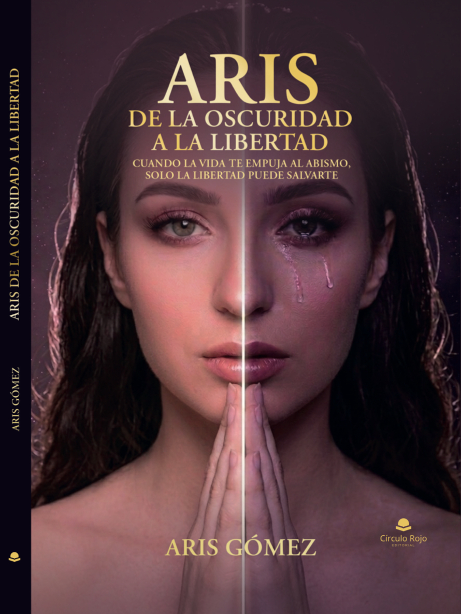

ARIS De la oscuridad a la libertad

Una historia de supervivencia, memoria y reconstrucción personal.
La obra autobiográfica de Aris Gómez Olalla, narrada en tercera persona. Un recorrido hacia la recuperación de la propia voz, con prólogo de la cineasta y escritora Mabel Lozano.
Hay historias que no se escriben para olvidar, sino para volver a encontrar la libertad.
Una historia que merece ser contada
ARIS: De la oscuridad a la libertad narra en tercera persona un recorrido marcado por la adversidad y el deseo de recuperar la libertad.
A través de su testimonio, Aris Gómez Olalla aborda la supervivencia, la resiliencia y el significado de reconstruir la propia vida.
Publicado por Círculo Rojo en 2024, con prólogo de Mabel Lozano. Consulta las publicaciones en medios sobre el libro y la biografía de la autora.
El prólogo de Mabel Lozano en ARIS
«Nada dura, nada está completo y nada es perfecto»
«Ha sabido transformar todo su dolor en luz para iluminar un nuevo camino».
En el prólogo de ARIS: De la oscuridad a la libertad, Mabel Lozano parte de la filosofía japonesa Wabi-Sabi para reflexionar sobre la belleza de las cicatrices, la autenticidad y la aceptación de las experiencias que nos transforman.
Desde esa mirada, presenta la historia de Aris Gómez Olalla como un recorrido en el que reconocer las propias heridas forma parte de la reconstrucción personal.
Mabel Lozano y sus libros: su participación en ARIS
Para quienes buscan información sobre libros de Mabel Lozano, esta colaboración tiene un alcance concreto: ARIS: De la oscuridad a la libertad es un libro de Aris Gómez Olalla, con un prólogo escrito por Mabel Lozano.
¿Qué escribe Mabel Lozano en el prólogo de ARIS?
Su texto reflexiona sobre el Wabi-Sabi, las huellas de la experiencia y la posibilidad de reconocer las heridas sin esconderlas.
Aris Gómez Olalla es la autora del libro. Mabel Lozano participa como autora del prólogo. Conoce la trayectoria de Aris Gómez.
De la oscuridad a la libertad
También puedes descubrir La vida psicológica es un SUGUS.